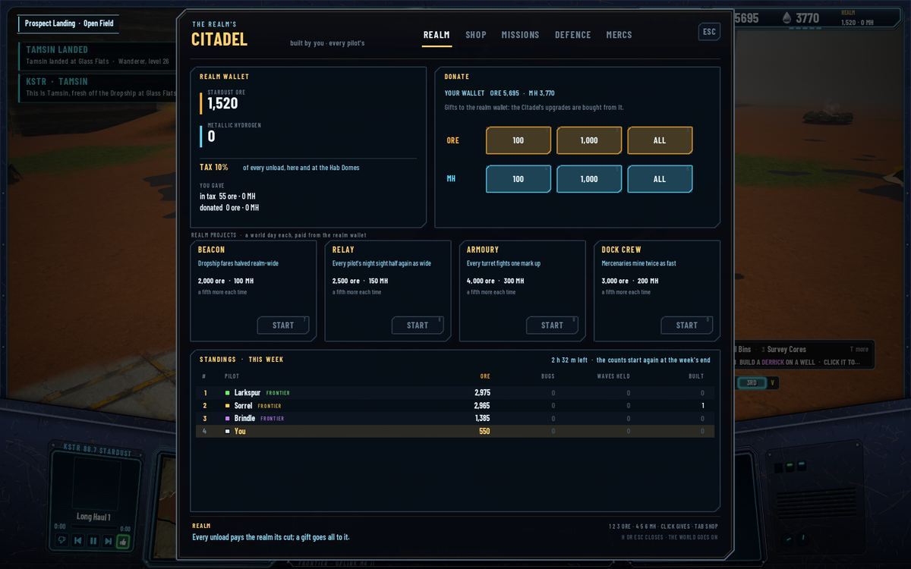
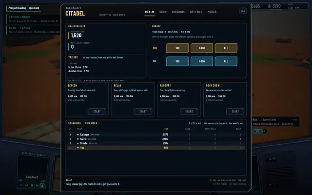
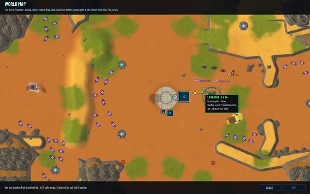
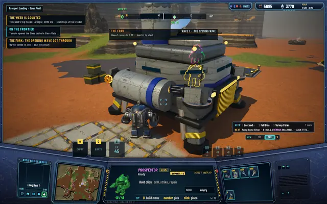

Realm standings: the week, counted
A realm is a few humans and the frontier pilots the server runs beside them, and until today nobody kept score. Now every pilot's week is counted, humans and frontier alike, on four things the server already sees, and the realm has a table to argue over.

What counts
The realm week is seven world days, 4 hours and 40 minutes of the clock. Over it, each pilot is counted on ore delivered, every unload at a realm building before the tax, with your mercenaries' deliveries counted to you; bugs felled, by your Prospector or by a turret you built; canyon waves held, a wave beaten that you fought, as the pay split already counts the fighters; and buildings raised, yours, finished. Nothing is estimated. The counts are taken where the server already books the thing, which is also why a frontier pilot's numbers are real: its work is booked by the same rules as its pay. A frontier hauler books 1,485 ore an hour against the balance curve's 1,489, so a week of nothing but hauling tops out at about 6,900 ore. A human who does more than haul can beat that.
Where it shows
On the Citadel's REALM tab, under the realm projects, STANDINGS · THIS WEEK: the top 8 pilots by ore, then bugs, waves and buildings as the tie-breaks, the four columns, your own row in gold after a gap when you're not among them, a frontier pilot's dot in its paint with FRONTIER beside its name, and the week's time left. On the world map, a frontier pilot's tooltip and your own add the rank and the leading stat: "1st · 2,975 ore this week". At the week's end every pilot on line gets THE WEEK IS COUNTED with the top hauler's name and ore, and KSTR calls it: "The week is counted, pilots! See the standings at the Citadel." A pilot off line finds the same line in the away report. Then the counts start again. A world down for weeks tells the end once.
KSTR's line is one take for every week, on purpose: a callsign like Pilot 1A2B and a number read badly spoken, so the toast carries them and the radio carries the occasion. One side effect worth knowing: a human's turret kills now count as bugs felled, as the frontier's always did; the hunt missions still count only what the Prospector itself kills.
The pictures come from a hidden run with three frontier pilots staged, a mercenary hired and two hours of booked work. The standings are saved with the world, with the week's start on the world clock, and a save from before starts its week at the load. Protocol 33, save schema 24, the suites at 505, 97 and 331.

The table: top 8 by ore, your row in gold, the week's time left.
The map's tooltip on a frontier pilot adds its rank and its leading stat.
The week's end: the toast names the top hauler; KSTR calls the week counted.